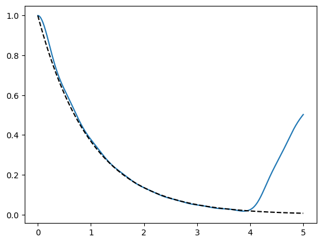

This notebook can be found on github
Numerical derivation of a master equation
Open quantum systems, i.e. systems coupled to an environment, can under certain conditions be described very well by a master equation. Its derivation is a bit technical but can very easily be reproduced numerically. Roughly following the approach in [1], we start with a system consisting of a single 2-level atom coupled to infinitely many modes of the electromagnetic field. The time dynamics of this system are governed by a Schrödinger equation with Hamiltonian
\[ H = \Omega \sigma^+ \sigma^- + \sum_k \omega_k a_k^\dagger a_k + \sum_k \kappa(\omega_k) (\sigma^+ a_k + \sigma^- a_k^\dagger) \]
For simplicity we assume that $\kappa(\omega) = \kappa_0$ for all relevant frequencies and that the selected frequencies are evenly spaced. Further on we change in a rotating frame and obtain
\[ H = \sum_k \Delta_k a_k^\dagger a_k + \sum_k \kappa_0 (\sigma^+ a_k + \sigma^- a_k^\dagger). \]
We will now demonstrate that for appropriate choices of $\Delta_k/\kappa_0$ the dynamics of the reduced system, where the electromagnetic modes are traced out, are given by the master equation
\[ \dot \rho = -i [\Omega \sigma^+ \sigma^-, \rho] + \gamma (\sigma^- \rho \sigma^+ - \frac{1}{2} \sigma^+ \sigma^- \rho - \frac{1}{2} \rho \sigma^+ \sigma^-) \]
The decay rate $\gamma$ is here connected to the coupling strength $\kappa_0$ and the density of states $g(\omega)$ by the relation
\[ \gamma = 2\pi g(\Omega) |\kappa_0|^2. \]
[1] Gardiner C., Zoller P. The Quantum World of Ultra-Cold Atoms and Light Book I: Foundations of Quantum Optics. The first step is to include the necessary libraries
using QuantumOptics
using PyPlotThen we define all relevant parameters
Nmodes = 16 # Number of electromagnetic field modes
Nfock = 1 # Maximum number of photons in the electromagnetic modes
γ = 1 # Decay rate in the master equation
κ0 = 0.5 # Atom-field interaction strength for a single mode
g = γ/(2π*abs2(κ0)) # Density of states (Fixed implicitly by κ0 and γ)
Δ_cutoff = (Nmodes-1)/(2*g) # Frequency cutoff of numerically included modes
Δ = range(-Δ_cutoff, Δ_cutoff, length=Nmodes); # Frequencies of numerically included modeschoose appropriate bases
b_fock = FockBasis(Nfock)
b_space = tensor([b_fock for i=1:Nmodes]...)
b_atom = SpinBasis(1//2)
b = b_atom ⊗ b_spaceand create the necessary operators
# Atom operators
σ⁺ = sigmap(b_atom)
σ⁻ = sigmam(b_atom)
# Single mode operators
a = destroy(b_fock)
aᵗ = create(b_fock)
n = number(b_fock)
# Hamiltonian
H = SparseOperator(b)
for k=1:Nmodes
H += κ0*embed(b, [1, k+1], [σ⁺, a])
H += κ0*embed(b, [1, k+1], [σ⁻, aᵗ])
H += Δ[k]*embed(b, k+1, n)
endFinally, after defining an initial state, it's straight forward to calculate the dynamics.
# Initial state
ψ₀ = spinup(b_atom) ⊗ tensor([fockstate(b_fock, 0) for i=1:Nmodes]...)
# Time evolution
tspan = [0:0.01:5;]
tout, ψₜ = timeevolution.schroedinger(tspan, ψ₀, H)We use matplotlib to compare the result of the Schrödinger equation for the whole system to the analytic result of the reduced system described by a master equation.
using PyPlot
op = embed(b, 1, sparse(dm(spinup(b_atom))))
plot(tspan, expect(op, ψₜ))
plot(tspan, exp.(-γ*tspan), "--k")/root/.local/lib/python3.10/site-packages/matplotlib/cbook.py:1699: ComplexWarning: Casting complex values to real discards the imaginary part
return math.isfinite(val)
/root/.local/lib/python3.10/site-packages/matplotlib/cbook.py:1345: ComplexWarning: Casting complex values to real discards the imaginary part
return np.asarray(x, float)
1-element Vector{PyCall.PyObject}:
PyObject <matplotlib.lines.Line2D object at 0x7f7ec6b8f670>